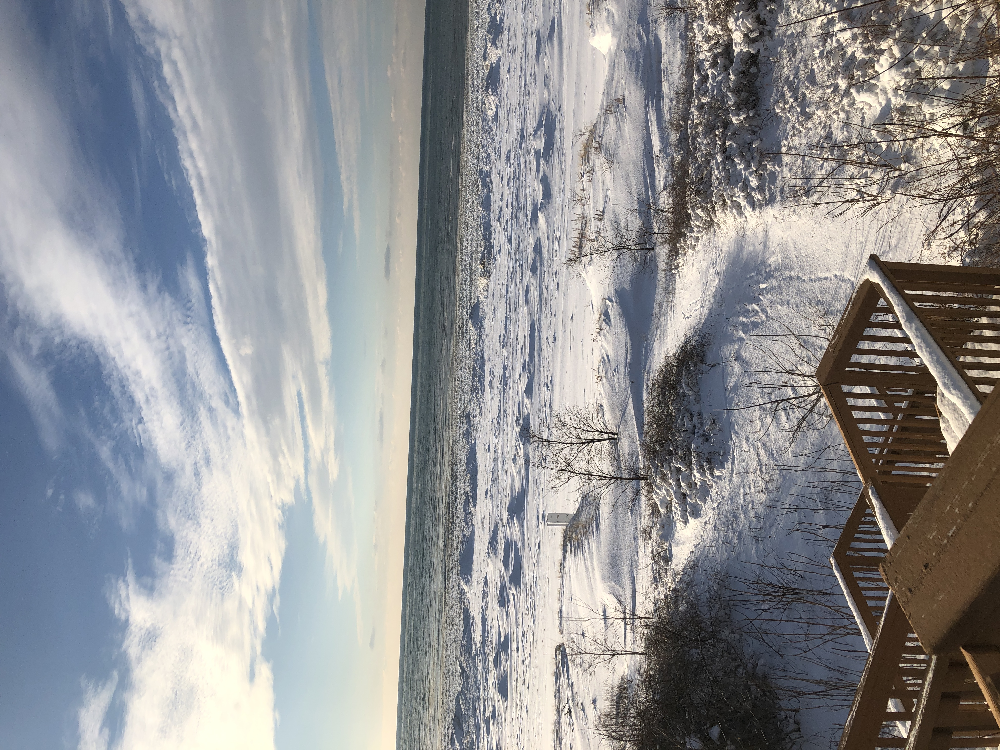

Photo Album
South Haven, MI
South Haven is a very special place for me. It's a small town on the western coast of Michigan about an hour drive from Grand Rapids and a 2 hour drive from Chicago. We started visiting in 2007, and in 2014 purchased the home we'd been renting for the previous seven years. We continued to live there in the summers until 2020 where we moved there for about a year. While these photos of the surrounding environment don't do the town justice, I still think they capture a little bit of what makes the town so special to me.
Porch photos
This is a view off of my back porch taken in Summer of 2023. This is how it looks for most of the year. There are usually a lot of deer that live in the brush below, but they dissapeared for a few years and only just came back this past summer. I always love this view because of how familiar and nostalgic it is. I've been seeing it my whole life and looking at it instantly takes me right back to those moments in the pandemic, when we bought the house, when we first visited, etc.

Same view in Fall of 2022. The orange and pink sky mixes so well with the red and orange leaves, but it's a bit hard to tell since most of the bluff is cut off. Even then, the plants there don't really turn red and orange like a lot of the trees around there do. They stay green and then shed their leaves after the first big snow, so it looks pretty vibrant up until around late November.
This is the view off the porch in Winter 2022. Every so often, usually in January, the lake freezes over to the bottom at the shore. It freezes over the waves as well and creates little ice caves to duck into. There's walkable ice for about 50 feet from the shoreline and it feels like another world entirely.

This is the same view but in the early Spring of 2021 after all the ice and snow melted. It looks a little bit desolate but I think it's really interesting how in just a month's time the entire bluff becomes super verdant and dense with plant life. I love how the fog makes finding the horizon a little bit difficult in the photo. It really gives it a haunting feeling.
Kal-Haven Trail

This is a gazebo found on a boardwalk in the Black River back in 2021. I used to go there with my brother a lot since it was a good fishing spot. There was a lot of seaweed and shade, and a hole in the middle to lower fishing line into, so we would always catch something big there. In the years since, river floods have destroyed the gazebo and the boardwalk leading to it, so now it's just a pile of sunken rubble. There's talk of rebuilding it though.

I took this photo ages ago, way back in 2019. At first glance it looks like a photo of the sky and what could be stars during the day, but upon closer inspection it's actually a photo of a reflection in the Black River. I remember walking through the Kal-Haven Trail and noticing how reflective the water looked, so I took a photo and flipped it upside down. The "stars" are actually algae floating on the surface.

This photo was taken on the Kal-Haven Trail, a long trail that used to be a set of train tracks connecting South Haven to Kalamazoo. The trail is genuinely one of the most beautiful places I've ever been, and they even set up a Halloween celebration on it the Saturday before Halloween each year. Unfortunately, these kinds of colors on trees haven't shown up in South Haven as often as they did about a decade ago due to shifting climates. I vividly remember the trees in and around town being really pretty and red for months in 2015 and 2016, and the Kal-Haven trail was like a tunnel of red for miles.
Miscellaneous

I took a photo of this tree in my friend's yard in Fall of 2022. We met back in 2011 on the beach and became fast friends, then found out we were actually planning to go to the same kindergarten that next fall. She and I have been friends since, and became neighbors when we bought the house we had been renting for years prior.
I took this photo in the pandemic after buying a new bike and riding along Blue Star Highway to get home since the drawbridge in town I had to cross was stuck up. After turning from the highway onto Baseline Road, I stopped along the side near a newly developing Harbor Club and saw these little blue flowers barely sticking out of the ground. Since then, the patch of grass they were growing in has since been bulldozed over and turned into sidewalk. The flowers are young Grape Hyacinths, and are considered exotic plants in the Midwest and Eastern United States.
I took this photo with my friend on August 11th, 2020. She and I spent a lot of time stargazing back then, especially when we watched the Perseid Meteor Shower at its peak back in 2019. For this photo we set up her really nice camera and turned the exposure all the way up so the camera could capture what our eyes were seeing. The streak in the distance is the NeoWise Comet, discovered just 2 months before its appearance. This photo truly is a once in a lifetime chance, since it won't be back to Earth for more than 300,000 years. Taking this photo is one of my most treasured memories.